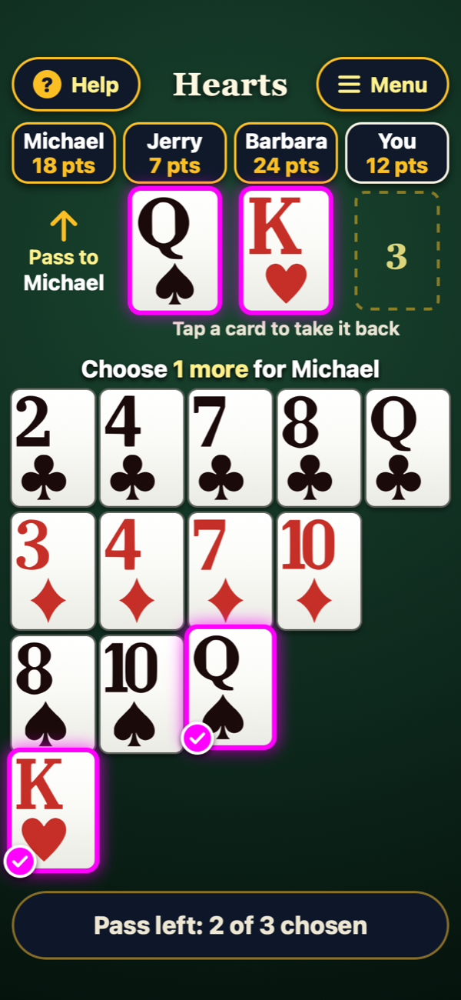

1
One row per suit
Claude's design, one entry in a three-way design comparison, puts her hand in four rows: clubs, diamonds, spades, hearts. When she must follow suit, the cards she can play are one whole row. Each player's card lands under their name, labeled "Led", "Winning" or "Takes it". Claude made its entry after seeing the other two and labeled it that way. I chose it.

OutcomeSelected Suit Rows.